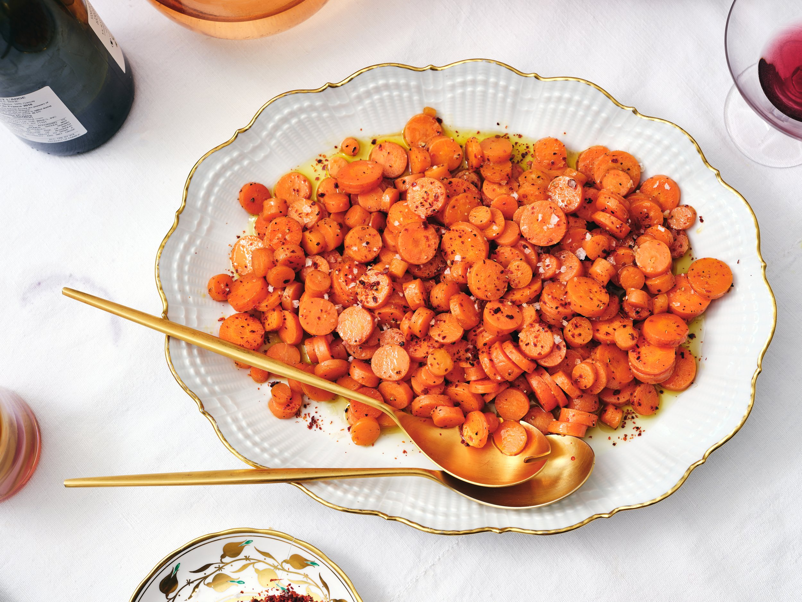

Buttery Carrots Recipe

Description
This is one of the few occasions when overcrowding the skillet is a good thing. These carrots are cooked in fat (schmaltz, olive oil, butter), with a pinch of something spicy (red-pepper flakes, cayenne, even hot paprika), sort of half-steaming on top of each other until just tender (no mushy carrots here, please). At the end, they are seasoned with a bit of finely grated or chopped garlic off the heat, which quiets the garlicky punchiness without extinguishing it entirely. Like a sandwich cut into triangles, the fact that the carrots are sliced into rounds makes them taste above-average delicious.
Ingredients
- ¼ cup chicken fat, olive oil or unsalted butter
- ¼ cup olive oil
- Pinch of red-pepper flakes (optional)
- 2 bunches carrots, topped removed (about 1 pound), thinly sliced into rounds
- Kosher salt and freshly ground black pepper
- 1 garlic clove, finely chopped or grated
Steps
- Melt chicken fat in a large skillet over medium-high heat. (If using butter, melt until lightly foamy and starting to brown, 2 to 3 minutes.) Add olive oil and red-pepper flakes, if using, swirling to bloom a bit in the butter. Add carrots and season with salt and pepper. Cook, tossing occasionally, until carrots are just cooked through, 3 to 4 minutes. (They should be simply softened, like al dente pasta, not soft or mushy.)
- Remove pan from heat, and add garlic, tossing to coat, and transfer to serving bowl.